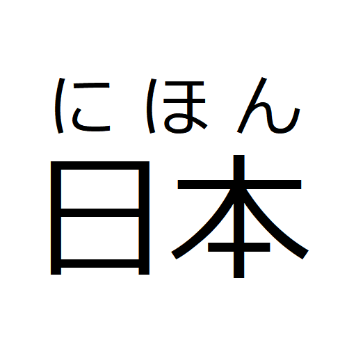
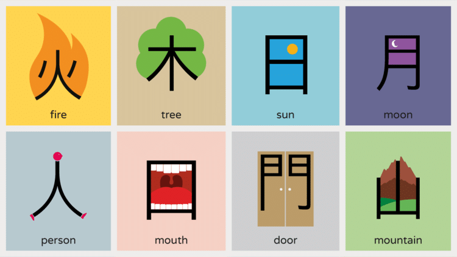

Bem-Vindo! (ようこそ )
Aqui você irá aprender os caminhos para aprender a japonesa! Está preparado?
Para começar precisamos entender que o japonês conta com 3 sistemas de escrita em sua estrutura: Hiragana, Katakana e Kanji.
Te explicarei detalhadamente para que cada um é usado e qual a ordem para você começar a aprender.
Para começar precisamos entender que o japonês conta com 3 sistemas de escrita em sua estrutura: Hiragana, Katakana e Kanji.
Te explicarei detalhadamente para que cada um é usado e qual a ordem para você começar a aprender.
Hiragana (ひらがな)
O hiragana (ひらがな) é um dos três sistemas de escrita do japonês, junto com o katakana e o kanji.
Ele é o
alfabeto silábico básico do idioma japonês e serve principalmente para representar palavras e
terminações gramaticais de origem japonesa.
Ele pode ser utilizado para:
1 - Palavras que não possuem Kanji, no caso, palavras japonesas.
Exemplo: さくら (sakura) = flor de cerejeira
2 - Partículas gramaticais:
Exemplo: は (wa) - indica o tema da frase
3 - terminações dos tempos verbais:
Exemplo: 食べます (tabemasu) = “comer” (食(ta) = kanji, べます (bemasu)=
hiragana)
4 - Auxiliar a leitura de Kanjis, conhecido como furigana.

Exemplo, na imagem acima está escrito 日本
em Kanji a cima está a leitura desse Kanji (にほん) que significa Japão e se pronuncia "Nihon".
Podemos observar que o Hiragana é muito importante pois ele ajuda na compreensão de Kanjis,
atua como um auxiliador na estruturação de frases tanto como particula como também nas
conjugações de verbos em japonês, além de também ser utilizado para palavras de origem japonesa.
Katakana (カタカナ)
Como aprendemos, o Hiragana desempenha um papel muito importante dentro da japonesa.
Acompanhado com ele, também temos o Katakana(カタカナ), que auxilia ainda mais no entendimento do
idioma.
Porém, seu uso acaba sendo diferente do alfabeto que acabamos de aprender. O Katakana aparece
mais em palavras que não tem origem japonesa ou quando há uma necessidade de expressar algo com
mais ênfase em sua escrita. Como assim? Vejamos alguns exemplos:
Palavras estrangeiras: Computador em japonês é コンピュータ (konpyūtā) derivado de "Computer" do
inglês.
Onomatopeias: キラキラ - (Kira Kira) que significa algo brilhante ou cintilante.
Destaque/Ênfase: カワイイ(Kawaii) é um exemplo clássico, é naturalmente escrito em hiragana かわいい, mas foi escrito em katakana para chamar atenção ou dar destaque.
Onomatopeias: キラキラ - (Kira Kira) que significa algo brilhante ou cintilante.
Destaque/Ênfase: カワイイ(Kawaii) é um exemplo clássico, é naturalmente escrito em hiragana かわいい, mas foi escrito em katakana para chamar atenção ou dar destaque.
Kanji (漢字)
O Kanji é um sistema de escrita que vem de origem chinesa e diferentemente do Hiragana e o
Katakana, que são alfabetos silábicos, o Kanji representa uma ideia. Como assim?
Imagine uma placa de trânsito, você olha para a placa "Proibido estacionar", "Pare", "Vire a
direita" e mesmo sem precisar de muitas explicações você já sabe o que quer dizer.
Com o Kanji acontece da mesma forma, ele irá expressar irá expressar uma ideia, e ao bater o
olho você conseguirá entender o que quer dizer aquilo.
Porém, a utilização do Kanji acaba sendo difícil pois ele possui muitas leituras (mas isso é um tópico mais avançado, não se preocupe com isso agora). O que você precisa saber:
Porém, a utilização do Kanji acaba sendo difícil pois ele possui muitas leituras (mas isso é um tópico mais avançado, não se preocupe com isso agora). O que você precisa saber:
1 - Eles representam palavras com significado próprio, como no exemplo abaixo.

2 - Ajuda a evitar ambiguidades, pois em japonês existem muitas palavras que possuem o mesmo
som, porém significados diferentes.
Por exemplo: はし - (hashi) pode ser “ponte”, “talher” ou “beira”. O que ajuda a diferenciar cada um deles é os kanjis:
橋 = ponte, 箸 = talher, 端 = extremidade .
Por exemplo: はし - (hashi) pode ser “ponte”, “talher” ou “beira”. O que ajuda a diferenciar cada um deles é os kanjis:
橋 = ponte, 箸 = talher, 端 = extremidade .
O Kanji possui muitas outras utilidades, porém como já mencionei é um tópico um pouco mais
avançado. Conforme avançamos no nosso estudo, as coisas começarão a fazer um pouco mais de
sentido.
Por onde começar os estudos?
A melhor trilha para começar seus estudos de japonês começa em aprender a base do idioma: o
hiragana. Através dele será possível começar a ler algumas sentenças e aprender vocabulario.
Depois, aprender o Katakana é de extrema importância, pois a japonesa possui muitas palavras
estrangeiras em sua estrutura. Em seguida, busque dar foco em aprender a base da gramática e
vocabulário. Por fim, comece a jornada de estudo aos Kanjis.
Sendo assim, vamos começar seus estudos? Acesse o conteúdo de hiragana agora mesmo.
Sendo assim, vamos começar seus estudos? Acesse o conteúdo de hiragana agora mesmo.